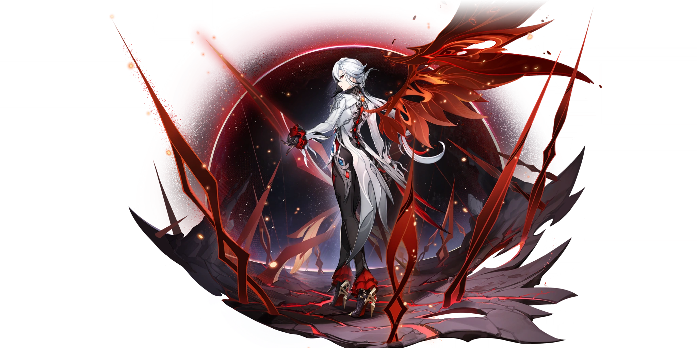
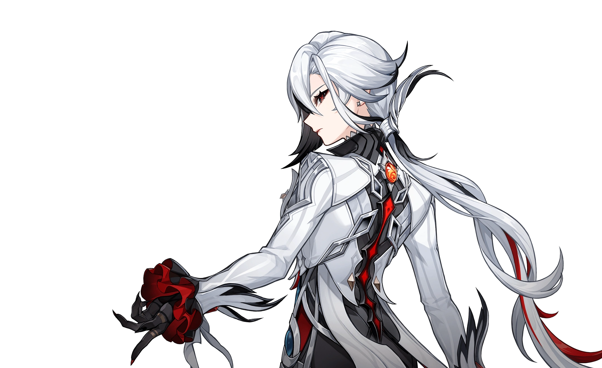
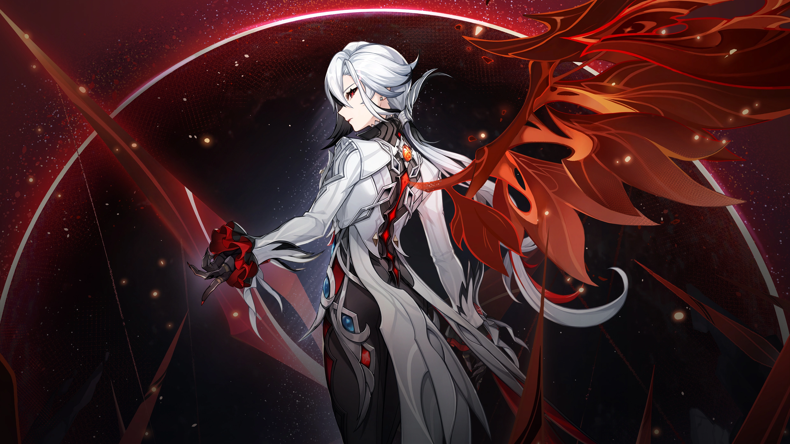
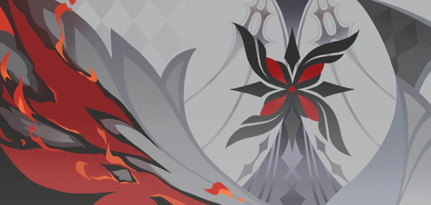
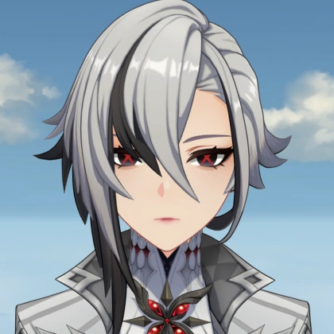
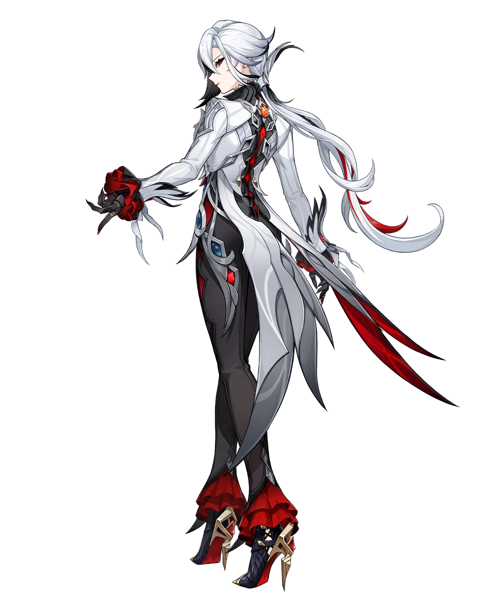
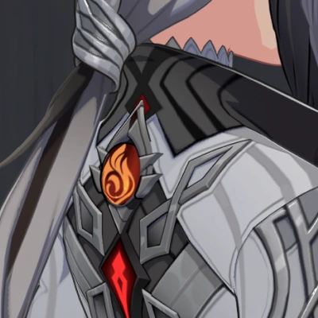

The Fourth of the Eleven Fatui Harbingers, head of the House of the Hearth, and the one the children call "Father" — composed, ruthless, yet carrying wounds deeper than her cursed blood.
Arlecchino is one of the most enigmatic and beloved characters in the Genshin Impact community. Behind her elegant and terrifying exterior lies the story of an orphan who rose from injustice to become one of the most powerful beings in Teyvat.
Her true name is Peruere. After replacing her predecessor, she was given the codename "Arlecchino" — drawn from the stock character of the Italian commedia dell'arte, fitting her contradictory nature perfectly.
Holds the fourth seat among the Eleven Harbingers, rising to this rank in roughly a decade — an achievement that led fellow Harbingers like Tartaglia and Wanderer to call her "crazy" and "insane."
She rejected the title "Mother" used by her predecessor, Crucabena. Instead, she chose to be called Father by the children of the House of the Hearth — stern love, not permissiveness.
Tied to the Crimson Moon Dynasty, the first royal lineage of the fallen kingdom of Khaenri'ah. Her cursed blood turns black, granting immense power while her body slowly burns from within — a fate she quietly welcomes.

Arlecchino's story revolves around childhood trauma, betrayal, and the burden of "power" taken through blood. It all began at the House of the Hearth under the tyrannical rule of a woman named Crucabena.

Peruere was an orphan taken in by the House of the Hearth. In truth, she descended from the Crimson Moon Dynasty, the first royal line of Khaenri'ah. Subjected to a dark ritual by Crucabena, her blood turned black and venomous — the reason her hands and forearms are blackened. This curse grants her immense power, but also slowly burns her body from within. She knows the darkness will keep spreading until it kills her — and she has accepted that fate without complaint.
As a child, Peruere befriended Clervie, the biological daughter of Crucabena. Both recognized the cruelty of "Mother" was not normal. Crucabena deliberately pitted orphans against each other in a death-match "Battle Royale" to find a successor. Clervie repeatedly tried to rebel, but always failed.
At sixteen, unable to fight or flee any longer, Clervie chose to die at Peruere's own hands — a death she chose so her friend would not be burdened with killing her in the battle royale. This event left an indelible scar on Peruere's soul.
Peruere trained relentlessly for a full year and obtained her Pyro Vision, which she kept hidden. She then challenged Crucabena at the very spot where Clervie died, and ended the life of "Mother." For killing a Harbinger, Peruere was seized and brought to Snezhnaya to face trial before the Tsaritsa.
Rather than sentencing her to death, the Tsaritsa promoted Peruere to Harbinger in place of Crucabena. She abandoned her old name and took up "Arlecchino." She adopted a Fontainian identity to conceal her true origins.
Under her leadership, the House of the Hearth was transformed — from a cruel killing ground into a safe haven where children have the freedom to choose their own futures, albeit still under iron discipline. Mocked by some Harbingers for her "softness," yet none dare challenge her power to her face.
The Fatui's intelligence headquarters in Fontaine, disguised as an orphanage. This is where "Father's" identity — and Arlecchino's entire family drama — takes root.


Located behind the Hotel Bouffes d'ete in Fontaine. Orphans from across Teyvat are gathered here, trained, and many go on to become Fatui soldiers and spies. It is the heart of the Fatui's intelligence network in Fontaine.
In Crucabena's era ("Mother"), children were forced to kill each other for a single successor seat — a horrific game called Marelle. In Arlecchino's era ("Father"), the codeword "Marelle" now symbolizes peace. Children are free to choose their own paths in life.
Among those she raised: Lyney, Lynette, and Freminet — Fontaine's famous magic troupe, the Crew Meropide. Freminet even lived under Crucabena's cruelty before Arlecchino took over.
One thing never changed: members of the House of the Hearth are called "children," and they call her Father. She believes that fear and love are two different things; true love comes from honesty, not from threats. Her children learn: no matter what happens, "Father" always has a plan — and she always protects them.
In the Fontaine Archon Quest, Arlecchino emerged as an unexpected figure — not a pure villain, but a difficult, volatile ally.

She posed as a Fontaine native for operational purposes. But in-game hints reveal her true lineage: descendant of the Crimson Moon Dynasty, the first royal line of Khaenri'ah. The "Balemoon" motif appears everywhere: her title "Dire Balemoon," her Burst Balemoon Rise, and her signature weapon.
She suspected Furina of hiding a massive secret. She even attempted to seize the Hydro Gnosis from her, only to discover Furina had no Gnosis and was under a strange curse. She maintained diplomatic courtesy — cold, but not barbaric.
When Tartaglia (Childe) vanished in Fontaine, Arlecchino came to investigate. Neuvillette handed her the Hydro Gnosis as a "diplomatic gift" for her assistance, and the Traveler asked her to return Childe's Vision before she departed for Snezhnaya.
When the prophecy of a catastrophic flood came true, Arlecchino helped evacuate Poisson and led the Traveler to ancient ruins hiding crucial mysteries. Members of the House of the Hearth assisted flood victims — proof her "family" was more than just a political tool.
Released in Version 4.6 "Two Worlds Aflame, the Crimson Night Fades," Arlecchino is the strongest Pyro DPS utilizing Fontaine's signature mechanic: Bond of Life. The greater her "bond of life," the more devastating her attacks.

| Skill | Name | Description |
|---|---|---|
| Normal Attack | Invitation to a Beheading | 6 consecutive spear strikes. During Masque of the Red Death, attacks convert to Pyro and consume Bond of Life for bonus damage. |
| Elemental Skill | All Is Ash | Deals AoE Pyro DMG and inflicts Blood-Debt Directives (which upgrade to Blood-Debt Dues) on enemies. Enemies slain while afflicted spread the bond to others. |
| Charged Attack | — | A quick dash slash that absorbs enemy Blood-Debt Directives and converts them into her own Bond of Life. |
| Elemental Burst | Balemoon Rise | Incinerates all active Bond of Life in a massive AoE Pyro explosion, heals her based on Bond consumed, and resets her Elemental Skill cooldown. |
| Passive 1 | Agony Alone May Be Repaid | NA DMG increased by 400% of her Bond of Life value. She can no longer receive external healing — only her Burst can restore HP. |
| Passive 2 | Strength Alone Can Defend | Every 100 Bond of Life points consumed by NA triggers Balemoon Bloodfire: bonus Pyro damage in front of her. |
| Passive 3 | The Balemoon Bloodfire | Grants 40% Pyro DMG Bonus while in Masque of the Red Death state. |
| Level | Effect |
|---|---|
| C1 | Masque of the Red Death enhanced: +100% bonus NA DMG, and increased interruption resistance while active. |
| C2 | Blood-Debt Directives convert to Dues immediately; absorbing them unleashes extra Balemoon Bloodfire AoE (900% ATK). |
| C3 | +3 Normal Attack talent level. |
| C4 | Absorbing Blood-Debt Dues reduces Burst cooldown by 2s and restores 25 Energy. |
| C5 | +3 Elemental Burst talent level. |
| C6 | Burst DMG +700% x current Bond of Life % (max +50%). Afterwards, CRIT Rate +10% & CRIT DMG +70% for 15s. |
Crimson Moon's Semblance — her signature 5-star polearm that transforms into a scythe when she wields it. 674 Base ATK, 22.1% CRIT Rate, grants Bond of Life via Charged Attack, and up to 36% DMG Bonus. Alternatives: Primordial Jade Winged-Spear, Staff of Homa, White Tassel (F2P).
Fragment of Harmonic Whimsy (4pc) — BiS thanks to Bond of Life synergy. Fallbacks: Gladiator's Finale (4pc), 2pc Crimson Witch + 2pc Marechaussee Hunter. Substats: CRIT Rate > CRIT DMG > ATK% > Elemental Mastery.
Talent priority: NA > Skill > Burst. She is an on-field DPS who actively rejects healing (anti-heal). Popular teams: Vaporize (Yelan/Xingqiu + Kazuha + Bennett), Melt (Citlali + Xilonen), Overload (Chevreuse + Fischl).
Some of the most memorable lines from the Father herself.
"The children of the House of the Hearth call me 'Father.' I do hope our partnership proves to be pleasant."
"Fear repaid with love. If you show them both, the children will grow up confused and afraid. For that reason, I do not love them. I merely fulfill my duty."
"I do not promise freedom. But I do promise that their deaths will not be in vain."
"My blood is cursed. Every day, this black skin creeps closer to my heart. When the end finally comes, I almost welcome it."
"Peruere" derives from the Latin perurere, meaning "to burn" or "to consume by fire" — perfectly matching her Pyro element and the curse that scorches her from within.
English: Erin Yvette · Chinese: Huang Ying · Japanese: Nanako Mori · Korean: Lee Myung-hee. Nanako Mori researched how to portray a morally ambiguous figure — cold on the outside, warm within.
Arlecchino has unique attack, walking, and running animations distinct from other tall female characters — especially when wielding her signature weapon that transforms into a scythe.
She apparently keeps a pet spider named Bambi, a reference to the Disney film. Any enemy who dares to disturb it... well, that is not our concern.
After Childe (Tartaglia) and Wanderer (Scaramouche), Arlecchino became the third playable Harbinger — and the only one to also be a Weekly Boss in her release version.
Every aspect of her kit echoes the blood-red moon: the banner title "Dire Balemoon," Burst "Balemoon Rise," weapon "Crimson Moon's Semblance," and her cursed black blood inherited from the Crimson Moon Dynasty of Khaenri'ah.